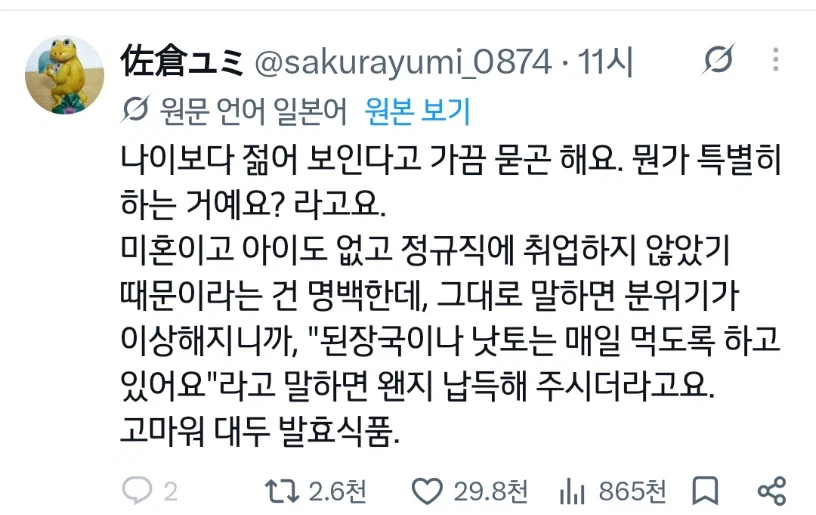

https://bbs.ruliweb.com/best/board/300143/read/76523395

대두단백
https://bbs.ruliweb.com/best/board/300143/read/76523395

대두단백
애 낳으면 폭삭 늙긴해..
일단 관리하기도 힘들고
수면시간도 불규칙해져서
관리도 필요없는게 크지.
결혼하면 살찌는거가 큰거같음
결혼해서 애 둘만 키워도 자기 시간 내면서 관리 하기 힘든 것 맞음.
결혼 안 했을 때는 헬스도 하고 등산 러닝 같은 것 하면서 관리가 되는데,
그냥 먹고 자고 일하고 애보고 무한 반복이 되버리니. 더 늙는 것 같음.
다행히 난 동안이라서, 지금도 고딩으로 보기는하지만..
저녁이랑 주말에 밥 같이 먹으니 식단도 못하고, 혼자 운동 가기도 애매하니 어쩔 수 없는듯
번식기 끝난 연어는 조용히 어디 숨어서 썩어가는 것과 같은 이치.
썬크림
절대 불변의 진리
그렇게 큰가 바르고 안바르고
ㅇㅇ
야구선수중에 양현종이 엄청바르는 사람으로 유명한데 동갑대비 피부가 차이 극심함
와 난 썬크림 발랐으면 어떻게 되는거지....
지금도 나이보다 어리게 봐주는데....
김치 먹는다고 해야 타고난 동안으로 손가락질안받는건가
내가 느끼는건데 햇빛을 안받으면 동안이다. 주로 야간직들이 동안이 많음
근데 야간직들은 건강검진하면 대부분 심혈관 계통 씹창나 있던데 ㅠ 바이오 리듬 깨져서 어쩔수 없겠지만서도
야간만 쭉 하는 거면 주간보다 그렇게 큰 차이 없는데
주야비휴 이런 직업들이 데미지 크게 받는듯
ㄹㅇ 그런 직업들은 걸어다니는 시체
대두에 발효된 얼굴인데 난 왜..
그냥 못생긴듯
괜히 미경산우가 우대받겠냐며
스트레스 안받고 잘먹고 잘자고
아이낳고 보통 폭삭 늙더라 수면질이 낮아지고
온통 애기에 정신이 쏠리면서
프리터(미혼,비정규직)
일을 그만두면 사람 얼굴빛이 달라짐
애낳고 안낳고가 진짜 큼 성별관계없이
결혼 안했는데 수면 불규칙 하고 피부도 뒤집어지고 관리도 안되면 어캐야 하냐
육아한다고 힘들엇다고 말하면 다들 그러려니할듯
제모만 해도 많이 젊어보인다. 단순히 수염이 없다는것만으로도 효과가 있지만 거뭇거뭇한게 없어서 훨씬 밝아보임
세상 스트레스 없으면 젊어보이지 ㅋㅋㅋㅋ
주변에 보면 내친구들도 결혼 안 한 새끼들이 젊어 보이기는 함.
30대 초중반인데 ... 결혼 하고 아이 한둘 있는 새끼들은 이미 40대 초반 같고,
결혼 안하고 싱글인 새끼들은, 20대후반 같음.. 같이 처 걸어 다니면, 졸라 밸런스 이상함 ㅋ
결혼 안한 새끼들은 아직도 머리 드라이하고 왁스 바르더라. ㅋㅋ